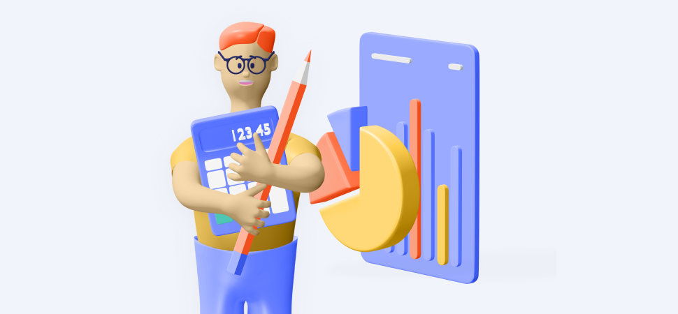

Главное про ИИС: что, зачем и как
Краткое руководство для тех, кто хочет инвестировать, но не знает с чего начать.
Количество зарегистрированных на Московской бирже индивидуальных инвестиционных счетов по состоянию на 6 апреля 2020 года достигло 2 миллионов.
Что такое ИИС?
ИИС – это индивидуальный инвестиционный счет, один из способов инвестирования финансов. Такой способ существует в России с 2015 года и представляет собой брокерский счет со льготным налогообложением и некими ограничениями.
Как открыть ИИС?
Для открытия ИИС нужно обратиться к брокеру, который занимается предоставлением таких услуг. На начальном этапе открытия счета инвестор выбирает подходящую стратегию инвестирования.
Есть два варианта открытия ИИС: удаленно или же непосредственно в офисе.
Список крупнейших российских брокеров
- Петрофф Инвестиции
- ПАО Необанк
- БКС Рус
- Брокер Восток
- Бета-Банк
ИИС с каждым годом становится популярнее, и если раньше казалось, что это только для олигархов сложно, то сейчас очевидно, что инвестировать может каждый.